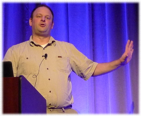

Hardware technologies for securing containers
There are plenty of security concerns with running containers and applications that have been containerized—some of those concerns can be reduced or eliminated using hardware techniques. Intel's Arjan van de Ven described some x86 technologies that can help with some of the security problems that containers face at a LinuxCon North America presentation. One of the technologies is brand new, having only been announced a few days before the talk.
Many people are downloading and running containers from the internet without any real checking on their provenance, which "should scare the hell out of you", Van de Ven said. That is a "sharp knife problem" that cannot be solved with hardware technologies, since it all comes down to trust. There are a number of trust issues with that, including whether a container truly comes from where it purports to originate with the binaries that are expected, whether it contains software that has vulnerabilities that have been discovered since it was created, and whether the contents are complying with the licenses that govern the code. Those are all of the same problems that users face when downloading a Linux distribution—the same kinds of solutions will need to applied to containers.

But if you look "beyond the sharp knife", there are security problems where hardware can help. One major concern is that the container is leaky somehow, such that the containerized application can escape its containment. An attacker may use that ability to directly attack the host operating system (OS) or they may attack another container running on the host. In addition, how does a container know that the OS it is running on has not been compromised? These are places where "hardware-assisted security" can help.
Intel's Kernel-Guard Technology (KGT) tries to protect the kernel against certain kinds of malware, Van de Ven said. It places a small monitor between the kernel and the hardware to protect certain kernel data structures or CPU registers from modification. The monitor is not a full hypervisor, but uses similar techniques to protect the system from certain kinds of attacks. Kernel code pages, interrupt descriptor table contents, and page table mappings could be protected using KGT, as could CPU control registers and model-specific registers (MSRs).
Containers, applications, and other components will be able to detect changes in the underlying system and its software using the attestation feature that the Intel Cloud Integrity Technology (CIT) provides. Attestation is a way to prove that the binaries for components like the firmware, bootloader, kernel, and, say, Docker daemon or rkt binary, have not changed. A chain of hashes is calculated for the elements and the Trusted Platform Module (TPM) is used to sign the hash in such a way that others can verify that those elements have not been changed.
The attestation can be extended to prove that a container is running in the right data center or in the right country. That may be important for countries that require their citizens' data to be stored domestically, for example.
It is a "picky and fragile" solution in some ways, since anything that gets changed will change the hash chain. So upgrades need to be handled carefully. In addition, it only proves the state of the software when it was started; if the binary gets changed later by way of a compromise, it won't be detected. There is also a performance cost associated with the feature, so it does not come for free, he said. Attestation is "not for the faint of heart", but can help solve some security problems for containers.
Clear Containers are another technology that can help secure "containers". It provides the isolation of virtualization with the performance of containers by actually running the container in a lightweight virtual machine. He didn't go into much detail about Clear Containers, as he gave another full talk on that subject at the conference. Support for Clear Containers has been added to the rkt container engine as a proof of concept. It works, but there are still plenty of "interesting problems" left to solve, he said.
The supervisor mode access protection (SMAP) and execution prevention (SMEP) features of some x86 processors are changing some of things that we learned in school about CPUs, Van de Ven said. Instead of the traditional ring model, where the most-privileged ring has access to the data in all rings, SMAP and SMEP make the rings almost completely disjoint. If an exploit tricks the kernel into accessing or running user-space code, the CPU will simply fault, stopping the attack in its tracks.
Of course, the kernel needs to access user-space data at times, which is where the overlap between the rings comes into play. The Linux kernel already has special methods to access user-space data; those can lift the SMAP protections for the duration of that access. Any other access will trigger the fault. It doesn't prevent all attacks using bad kernel pointers, but it does make it harder to exploit them. (Support for a feature similar to SMAP for ARM processors has been merged for the 4.3 kernel.)
The final feature he covered had only been announced two days earlier: Intel Software Guard Extensions (SGX). This new feature is "a little weird", Van de Ven said. It allows the system to define a special zone of memory (called an "enclave") that will be used to hold encrypted memory for both code and data. The enclave will also have some defined entry points. Only code that is running inside the enclave can see the unencrypted contents of the memory. Even the kernel cannot access the code and data inside the enclave from the outside.
The typical use case for SGX would be for secure cryptography; the key can be placed in the enclave and cannot be extracted from it. The entry points would provide services using the key, like signing. In addition, the CPU can attest that it is running from within the enclave to a remote server.
It is effectively a "black box with a call table". You may be able to trick the enclave into signing things that it shouldn't have signed, he said, but getting the key out is not possible. If there is a security hole in the code inside the enclave, though, all bets are off. In addition, debugging the code inside the enclave is difficult—you can't simply attach GDB.
The enclave is populated from a driver, Van de Ven said in answer to a question from the audience. Another attendee suggested the "Intel SGX for Dummies" site for more information on the feature.
He circled back around to KGT as he was winding down the talk. That feature will perhaps be the most generally useful for protecting against various kinds of attacks. It can protect all of the read-only memory in the kernel along with all of the MSRs and CPU configuration registers. Many of the data structures in the kernel can be made read-only and be protected using KGT. It can be configured with a set of rules that, for example, would allow only certain functions to change certain parts of memory. So KGT could enforce that only the user-space access methods in the kernel are allowed to change the SMEP and SMAP settings.
KGT is implemented as a mini-hypervisor that requires no kernel changes. The code is available (under the Apache 2.0 license) for those interested.
These hardware technologies are certainly not limited to protecting containers or containerized applications—they are more widely applicable. SMEP and SMAP have been around for a while, but Clear Containers, CIT, KGT, and definitely SGX are all relatively new, so Van de Ven's talk provided a nice quick overview of those ideas. It will be interesting to see how they got used in the future.
[I would like to thank the Linux Foundation for travel assistance to
Seattle for LinuxCon North America.]
| Index entries for this article | |
|---|---|
| Security | Containers |
| Security | Hardware |
| Conference | LinuxCon North America/2015 |
Posted Sep 11, 2015 11:56 UTC (Fri)
by PaXTeam (guest, #24616)
[Link]
actually it's PaX that brought that change into the world with KERNEXEC (2003) and UDEREF (2006). SMEP (3 years old) and SMAP (<1 year old) are inadequate substitutes unfortunately as they both suffer from bad designs (e.g., SMAP ties the override capability to highly volatile processor state instead of read-only code and data).
Posted Sep 20, 2015 5:04 UTC (Sun)
by linuxrocks123 (subscriber, #34648)
[Link] (5 responses)
Now, for people who want to rent servers in the cloud, this is all well and good. For desktop users, well, we could wind up in a world where websites require your browser run in an "enclave" to prevent you from even accessing the HTML to build a scraper.
Posted Sep 20, 2015 14:13 UTC (Sun)
by mathstuf (subscriber, #69389)
[Link]
I think having this hooked up to some kind of permission system would be best so that I can deny the browser from using it for DRM, but allow it for, say, client cert password management. Tech like this is really going to keep pressing the bounds of DRM into lives until something breaks. Ideally, people would say "no" and do a useful boycott, but I doubt that such an easy route will be the way it goes.
Posted Sep 20, 2015 19:54 UTC (Sun)
by mjg59 (subscriber, #23239)
[Link]
Posted Sep 21, 2015 5:25 UTC (Mon)
by lsl (subscriber, #86508)
[Link] (2 responses)
Even then, I currently fail to see how the remote attestation stuff gives you any meaningful assurance in that case.
So, we have a key locked away in a TPM and you can only sign/decrypt stuff with it when measurement comes to the conclusion that the machine is running an unmodified copy of Yesterday's Linux (or whatever else it is that changes seldomly enough to be workable with this scheme).
Why would I trust that key? One way I could be sure were if I personally prepared the TPM, sealed it and then destroyed all remaining copies of the key I put in there. But now I'd have to physically ship the TPM to the data center, so it's pretty unlikely that this is how it's supposed to work.
How do I keep the cloud service provider from simulating a fake TPM without putting a secret in it that I know but they don't?
Posted Sep 21, 2015 6:04 UTC (Mon)
by Cyberax (✭ supporter ✭, #52523)
[Link] (1 responses)
But you probably want to do this:
Posted Mar 23, 2016 2:51 UTC (Wed)
by sail_darcy (guest, #107818)
[Link]
Hardware technologies for securing containers
> are changing some of things that we learned in school about CPUs, Van de Ven said.
Hardware technologies for securing containers
Hardware technologies for securing containers
Hardware technologies for securing containers
Hardware technologies for securing containers
Hardware technologies for securing containers
Actually, you CAN do this - https://aws.amazon.com/cloudhsm/
1) Start a server.
2) Manually check that it's not compromised.
3) Create an enclave and have it generate a keypair, with the private key remaining within the sealed area.
Hardware technologies for securing containers